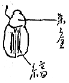

一九二七年三月
下旬の或日。春の始めの憂鬱な日がつづいた。
Ａ、四十五六。
独身、一
Ｙ、三十二歳
※［＃「Ｙ＋Ｙ」、495-13］ 二十九歳
或夜
Ａ来る。十二月から一人で農園をして居た
その朝
「友情うすき友達たちよ」
云々
「女性の声がききたくなった」
云々
手紙が来た。その夜来る。三人ともナー
 ァス 春の潮が神経をかき乱して居るため。
ァス 春の潮が神経をかき乱して居るため。何かの話から
Ａ、自分の妻、他の男が出来てその方に去ったこと、など話す
「女ってそうなもんなのかな、両方によくしておきたいんだな、然し僕は、それはその人にわるいからよせ」
と云った由にて交際はせず――そんな話珍しく出る。
イカモノ
女の何か書いたりする人っていうの大体イカモノ的な分子が多少ともあるんじゃないか
女房――結婚しないだっていいと思うんだ、イカモノとイカモノでね
Ａ、そして Ｙの言葉とがめなどちょいちょいしてうるさし
Ｙ、赧くなりかんしゃくを起し
「いいじゃないか うるさい」怒る。
何か※［＃「Ｙ＋Ｙ」、497-1］とＡとの間に、一種恋愛的雰囲気みたいなものあって、ＡはそのためにＹをじゃまにし ＹはそのためＡをじゃまにす ※［＃「Ｙ＋Ｙ」、497-2］をめぐる感情。何かにつれて※［＃「Ｙ＋Ｙ」、497-2］Ａと話して居ると、Ｙがひとり椅子によって居てこちらを見て居る意識になやまされ、ふと顔を見ると、Ｙ、とても怒ったような苦しいような切迫した表情なので、はっとし、苦しく座に堪えず。立って出る。あとこっちできいて居ると、ＹとＡ話して居るのでやっと安心。
※［＃「Ｙ＋Ｙ」、497-6］にＡ好意をもって居るなり ※［＃「Ｙ＋Ｙ」、497-6］もそれを知ってわるい心地でない
Ａかえったあと、Ｙ「あんな奴もう絶交してやろうか」などいう。
※［＃「Ｙ＋Ｙ」、497-8］変に居心地わるく苦しい心持になって それから数日陰鬱になる。
何となし
ＡとＹとの感情の故にどうこうと云って、Ａが惜しいのではないが……さて、……煙草の煙の最後の渦が消えたような心持とでもいうか。
〔欄外に〕
Ａの性格に対して、※［＃「Ｙ＋Ｙ」、497-13］好意は大して持たない ガンコなところ 自分の云いたいことしか云わないようなところ。
こせつく口やかましいところなど
Ａの性格に対して、※［＃「Ｙ＋Ｙ」、497-13］好意は大して持たない ガンコなところ 自分の云いたいことしか云わないようなところ。
こせつく口やかましいところなど
四月
恋、字の通りこい、あるものを追う、なきものを追うのが恋か という心地
わがものにならぬものをものとせんとつとめるまでの ひかるる心 恋
二つの愛
※［＃「Ｙ＋Ｙ」、498-2］
対手はひとりでよし
しかしその人が日々に新たな心の弾み、欲情、熱中をもって自分との生活をやってくれないとものたりなくなる心地
わかれて居て淋しがるのもよいと思うようになる
一人の対手に多くをのぞむ性質
Ｙは、一人からはその人の与えるものしかもとめず、
つまり、妻君は落付いて、貞潔であることをのぞむ。家庭は家庭、浮気は浮気、それはこれと別という心持。
※［＃「Ｙ＋Ｙ」、498-11］そのために、自分の裡にあるいろいろのものも、あるままに買って貰えぬ不満あり。
然し、Ｙの心持の方が
五月
那須にて。※［＃「Ｙ＋Ｙ」、498-15］
何かアンニュイを感ず。内部的に不調和で、生活に対しリボルティングになって居る。
秀雄居る
何かの話の間に※［＃「Ｙ＋Ｙ」、499-2］
「私段々Ｙが嫌いになって来る」と云う。冗談めかして云って居るが底に一種のビタアネスあり。
Ｙそれを感じ、不機嫌。いろいろ云い、※［＃「Ｙ＋Ｙ」、499-4］、泣く、何だか生活の淋しさを感じてなり、すべて馴れる、フレッシュネスを失う、習慣になる、その淋しさなり。
Ｙ、※［＃「Ｙ＋Ｙ」、499-6］を抱き、
「さあ、泣きな、べこや
長崎を思い出して御覧――お寺のところ――」
優しく優しく云う。※［＃「Ｙ＋Ｙ」、499-9］、その優しさに泣き、和らぎ眠る。
○Ｙは刹那的生存だ。
故に※［＃「Ｙ＋Ｙ」、499-11］が忘られない程の親切をしても忘れ、泣くほど腹の立つことをしても忘れてしまう。そういうたち。
又
○Ｙは、人生は何か、人間は何故このように生活するか、その目的意味などについて、考えたことなし。若い頃、実生活の内にある矛盾――例えば悪いことをする男が社会的高位につく、なぜか、それではわるいのではないか等、そういう風に苦しんだ。道徳性によって。
然し、社会の高い位置というのが、果して人間的生活の上で高い位置か、とは考えるたちでなかった。――哲学的ならず。
然し、三十三の今、そういうものが大して本当に価値もないものだと知って居る。その原因は、下らぬ奴でも或社会人としての力量さえあればその位のものにはなれると、わかったが故、又実生活の経験が、その地位で人間的苦悩を癒し得ず、却ってそれを増すのであることを知ったため、
然し、絶対に比較しての哲学によってそう判断するのではない。
※［＃「Ｙ＋Ｙ」、500-4］は、このような問題を哲学的に考える。国家というものについても社会についても。故に、超今日の批評生ずるなり。Ｙとは、この現代の評価に懐疑的であるという点に於て、一致して居る。
※［＃「Ｙ＋Ｙ」、500-6］、何かして遊んで居ても時々人生とは何ぞや、又このようにして居るうちに貴重な一生の部分の過ぎゆくことを痛感し黙然とすることあり。
Ｙ、そのようなことはない、それで※［＃「Ｙ＋Ｙ」、500-8］、一種の bitterness と孤独感を覚えて
「楽天家！」と呼ぶ。
Ｙ地道なり。日常生活が幸福に行って居ると、心苦しまず。
※［＃「Ｙ＋Ｙ」、500-11］は、第二次的クサリがなく、自由なればなる程、大きな疑問と面接する自己を感じて苦しむ。
八月一日
夜、黄金虫が障子にとまった。
 朱と金の漆塗と、
時々三対目の後脚をいかにもかゆそうにこすり合わせた、見て居て、自分もくすぐったくなる程
〔欄外に〕
よく見るとうるしの刷目のようなむらさえ頭や翅にあり、一寸緑色がぼやけて居るあたりの配色の美、
よく見るとうるしの刷目のようなむらさえ頭や翅にあり、一寸緑色がぼやけて居るあたりの配色の美、
田舎の寺の和尚・宗匠
何でも云いたいことを十七字につめて云うて見なさい
「サコジ行く ダモンのさきで ホトが鳴く」
「ふつうの言葉で云うて御覧」
「三光寺行く 大門のさきで ほととぎすが鳴く」
愛情の種々
○性的生活に於て 能動的なものの被動的なものに対して感ずる愛情。
○能動的な立場のものは 自分によってあのように燃え 情を発し、夢中になるものが可愛く 何も云えず牽きつけられる。自分に向って来る体のすべてが可愛く、触覚に訴えられたすべてを味い、知って居る。――故に女より女の美しさは男が知って居る 美しい女は男が描く。
○女は、男を愛しつつ、男が女を味うように男を味うことは尠い。圧倒される形だから。例えば顔にしろ、男は観る、女は見ないのが普通。一定の感覚にだけ全心の注意をあつめる。故に美感にとぼし。性慾を芸術にまでたかめ得ず
○女に恋着あって、対手を何も云えずいつくしんで見るようになる男の心持ない わけ。
〔欄外に〕
翌朝、何か一種揺蕩 たるややエロティックな感じあり。対手を見なおす心持、何か他人でないような気持がする。
いとしさのようなもの、或いやさもあり。
翌朝、何か一種
いとしさのようなもの、或いやさもあり。
〔一九二八年〕二月三日 モスクワ
午後三時半頃日沈、溶鉱炉から火玉をふき上げたような赤い太陽（円く、大きく）光輪のない北極的太陽 雪のある家々の上にあり 細い煙筒の煙がその赤い太陽に吹き上げて居た。
五時すぎ
モスクワの町を、月が照す。モスクの金のドームを照す。
（月の光のとどかぬ暗い隅で刃物磨ぎをする男の転り磨石とホー丁の間から火花が散り、金ものの熱する匂いがした。）
この日没と満月の出の間、非常に短く、月は東に日は西という感じが、街を歩いて居る自分にした。
「七銭で結構だよ」
「いいえ！ 駄目駄目」
リンゴを二つ持って、カーチーフをかぶった若い女が、大道商人とかけ合って居る。
女乞食が、外国人の女の傍について、
「御慈悲深いお嬢さん、小さい娘のためにどうぞ」
女は、見向きもせず歩いて行く。
コムソールが、羊皮外套をきて、二人来た。その外国の女を見て
「из 上海」
その時大きナ菓子屋の軒先にパッと百燭の電燈がともった。
中央電信局の建築場では、労働者と荷橇馬が出切った木戸を、つけ剣の銃を手にもった若い番兵がしめて居る。彼の頭の上につられて居る強力な電燈が凍った雪の上に、垂直に彼の影を、きたない、大きな皮外套の裾の下に落した。
○夜八時
ストロー
ヤを出たら、煙が街にあるようで、段々それが濃くなった。霧。四日
橇の馬の体に汗が凍って、毛が真白に凍って居る。
人間の男の髭も白い。
午後三時雪が、労働新聞社の高い窓の一つを焔のように燃え立たせた。
○降誕祭には開いて居た教会の正面の扉に、錠が下ろしてある。
外壁に沿った裏通りに古本屋が露店を出し、空屋に店を出して居るところにモーランの夜開く、武郎の或女、ゾラの小説がさらしてあった。
○壁の厚さの感じ。
五日 ひどいモローズ
プーシュキン・ブル
ールの樹木が皆真白になった。そこを、黒く多勢の人々が歩いて居た。人々は小さく見えた。白い風景の中にレーニン・インスティチューションが直線的に立って居る。その空に月が出た。
イムベルのところ
フランスの色調、トミスという犬、
ジェリンスキー、構成派のクリチク
アメリカに行きたい
アメリカの New インテリゲンチャの好奇心。動、強さ、新しき文学
彼等の生活力、テクニック。
〔欄外に〕
ロシア人は 彼等の着物を着かえたばかりではない 心まで変りつつある。
ロシア人は 彼等の着物を着かえたばかりではない 心まで変りつつある。
二月二十三日
クラスナヤ・アルミアの十年祭、方々に赤い旗が出て居る。
モスクワ大学の立琴と鷲のギリシア式鉄柵の間に古本を挾んで売って居る。ゲーテ、三人姉妹、レムブラント、ノーヴィミール。など。